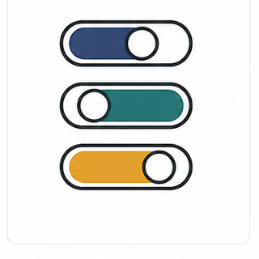
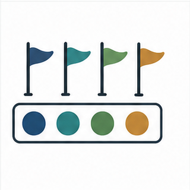
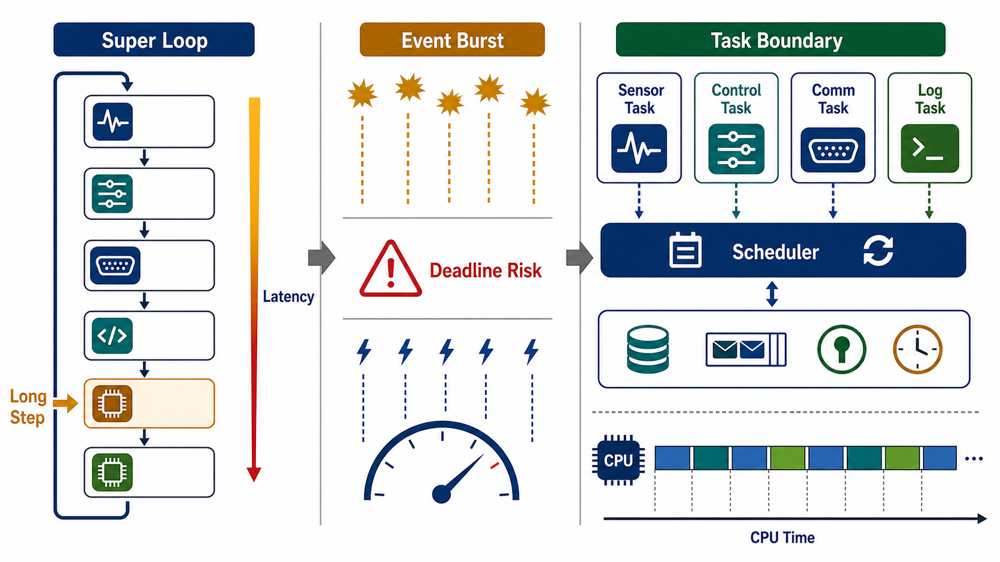
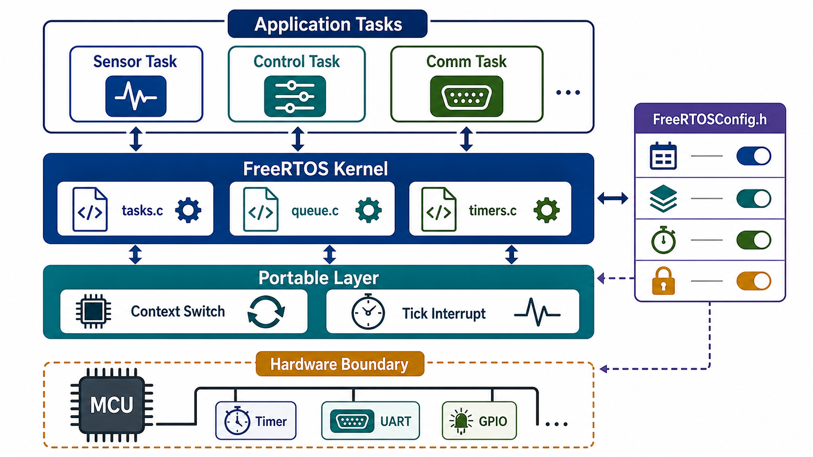
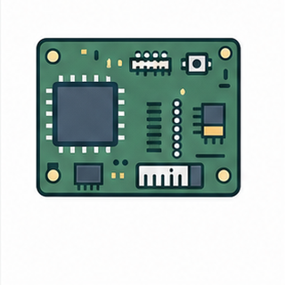
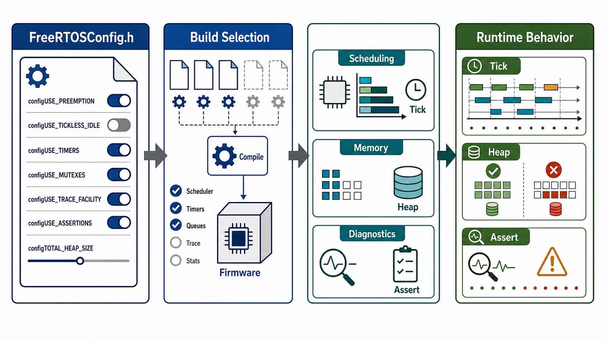

Keys: Left/Right or PageUp/PageDown to move, Home/End to jump, S to toggle slideshow, F for fullscreen, Z for fit/fill, Esc to exit.
Module 01 - FreeRTOS Foundations
From program structure to execution structure
RTOS Perspective and FreeRTOS Project Structure
This module builds the vocabulary and project-reading habits needed before writing FreeRTOS tasks. The starting point is not an API list, but the execution structure of embedded firmware.
Course: FreeRTOS Lecture Embedded Systems Laboratory, Pusan National University Instructor: Prof. Yunju Baek
Learning path
Program flow, timing constraints, and super-loop limits
First target: read FreeRTOS as an execution model embedded inside firmware.
1 / 37
Module 01 - Learning Route
Concepts introduced before they are used
Learning Route
The module moves from familiar C program flow to RTOS execution structure. Icons mark the type of idea being introduced: timing, hardware event, kernel mechanism, memory, source, and configuration.
Timing
Latency, jitter, deadline, and worst-case behavior.
Events
External hardware events and interrupt pressure.
Kernel
Task, scheduler, kernel object, and context switch.

Config
Compile-time choices that change runtime behavior.
By the end of this module, the project tree should read as a map: where application logic lives, where kernel code lives, and where hardware-specific code enters.
The flow is concept first, source reading second, API details later.
2 / 37
Module 01 - Background Model
From CS program flow to firmware execution
C Program Flow Under Hardware Constraints
A third-year CS student already knows functions, loops, stacks, interrupts, and operating-system scheduling at a high level. Embedded firmware combines those ideas with direct hardware events and tight resource limits.
Familiar CS ideas
A C program follows explicit control flow
Function calls consume stack space
Interrupts can break the current instruction stream
A scheduler chooses which execution stream runs
Embedded differences
The program may be the whole software stack on the device
Memory and CPU time shape design decisions
Peripherals generate events outside the normal call order
Missing a timing requirement can be a functional failure
FreeRTOS connects OS scheduling ideas to firmware that directly touches hardware.
3 / 37
Module 01 - Firmware Model
One image, many responsibilities
Firmware as a Whole Program
In many embedded systems, firmware is not one process among many. It is the software image that initializes hardware, reacts to events, runs application logic, and owns failure handling.
BootReset vector, startup code, C runtime setup
→
InitializeClock, GPIO, UART, timers, memory
→
RunLoop or scheduler-driven execution
CPU time
The same processor must handle all active work.
Memory
Stack, heap, and static data are limited.
Peripherals
Hardware events arrive asynchronously.
Failure
Late or missing work can break behavior.
Firmware correctness includes both code logic and timing behavior.
4 / 37
Module 01 - Timing Vocabulary
Words needed before discussing RTOS design
Latency, Jitter, Deadline
These terms are used throughout RTOS design. They are not performance buzzwords; they describe what the firmware must guarantee or at least bound.
Term
Meaning
Firmware example
Latency
Time from an event becoming ready to the code that handles it actually running
Delay from UART packet arrival to parser execution
Jitter
Variation in timing from one period or response to the next
Sensor sampling sometimes at 10 ms, sometimes at 18 ms
Deadline
Latest useful time by which work must complete
Control update required before the next actuator cycle
Worst case
The longest plausible execution or waiting time, not the average
Flash write or packet burst causing rare long delay
RTOS design begins with timing vocabulary, not with API syntax.
5 / 37
Module 01 - Workload Types
Different jobs, different timing needs
Timing Requirements in Embedded Firmware
Firmware rarely has only one kind of work. A simple loop often grows into periodic sensing, event handling, communication, logging, and safety checks with different timing expectations.
Periodic
Sensor sampling, control loops, heartbeat signals.

Event-driven
Packet arrival, button press, DMA completion.
Background
Logging, statistics, cleanup, diagnostics.
Critical
Watchdog feed, actuator update, safety check.
The design problem is not only how many functions exist, but whether their timing requirements can safely share one execution path.
Timing requirements turn ordinary C control flow into a scheduling problem.
6 / 37
Module 01 - Super Loop
Sequential control flow as a starting point
Super Loop Execution Semantics
A super loop is a single repeating control structure. It is easy to understand because only one path is explicitly running, but every function waits for the previous function to finish.
while (1) {
read_sensor();
update_control();
handle_uart();
refresh_display();
write_log_if_needed();
}
Execution rule
One function runs at a time
Later functions inherit earlier delays
Event flags wait until checked
Priority is hidden in function order
A super loop is readable because scheduling is hidden inside function order.
7 / 37
Module 01 - Latency Chain
How sequential delay propagates
Latency Accumulation in a Super Loop
When one job runs long, every job behind it waits. This makes worst-case behavior more important than average behavior.
Sensor
Usually 1 ms, sometimes 6 ms
UART burst
Parsing can take 12 ms under packet burst
Display
DMA wait or refresh can add 8 ms
Control
Expected every 5 ms, but inherits all previous delay
The loop can look simple while hiding an unbounded waiting chain.
8 / 37
Module 01 - Event Burst
Periodic work meets external events
Event Burst and Periodic Work
Periodic work wants a stable interval. Event-driven work arrives without warning. A super loop makes both wait in the same line.
Burst scenario
Sensor sampling expected every 10 ms
UART packet: usually one, sometimes twenty
Display refresh expected every 33 ms
Log flush can run long because of flash write
Visible symptoms
Increasing sampling jitter
Occasionally slow button response
UART overflow or packet drop
Different timing on each rerun
If function order is the only priority rule, what happens when external events arrive faster than the loop can process them?
Moving code around is not the same as managing timing conflicts.
9 / 37
Module 01 - Interrupt Boundary
What an ISR is allowed to do
Interrupt Service Routine
An interrupt service routine, or ISR, runs in response to a hardware interrupt. It can react quickly, but it should usually stay short because it interrupts normal program execution.
Entry
Hardware event forces entry outside normal call order.
Short work
Record the event and leave heavy processing elsewhere.
Shared data
Shared buffers need careful protection.
Debug cost
Long ISR paths reduce reproducibility.
An ISR is an entry point from hardware, not a replacement for a scheduler.
ISR design is the first place where hardware timing and software structure collide.
10 / 37
Module 01 - RTOS Definition
A small kernel for scheduling and coordination
What an RTOS Adds
An RTOS is a small operating-system kernel designed for embedded timing and coordination. In FreeRTOS, the kernel is linked into the firmware and provides mechanisms for tasks to wait, wake, communicate, and share the CPU.

Read the visual
Left: one loop accumulates latency as work grows
Middle: event bursts expose deadline risk
Right: task boundaries make scheduling choices explicit
Kernel objects carry communication and waiting behavior
Real-time means timing behavior matters. It does not simply mean maximum CPU speed.
RTOS design is about making waiting and scheduling explicit.
11 / 37
Module 01 - Mechanism And Policy
The kernel does not design the product for you
Kernel Mechanism and Application Policy
FreeRTOS provides mechanisms. The application still owns policy decisions: what counts as important, where waiting is acceptable, and how failures should be handled.
A poor task design can make an RTOS-based firmware harder to reason about than the original loop.
FreeRTOS gives mechanisms; the firmware design still supplies policy.
12 / 37
Module 01 - Task
First core RTOS term
Task
A FreeRTOS task is a schedulable execution unit. It has an entry function, its own stack, runtime state, and kernel metadata that lets the scheduler manage it.
Application view
A task is where one stream of firmware work is written as a C function.
Kernel view
A task is an object with state, priority, stack pointer, and list links.
Design view
A task boundary expresses how the firmware separates responsibilities.
A task is not just a function; it is a unit the kernel can schedule.
13 / 37
Module 01 - Scheduler
The CPU selection mechanism
Scheduler
The scheduler is kernel logic that chooses which Ready task runs on the CPU. In a super loop, function order chooses execution. In an RTOS, scheduler rules choose execution.
Ready listTasks that can run now
→
SchedulerApply priority and state rules
→
Running taskCurrently owns the CPU
The scheduler does not decide product intent. It applies rules to task states and priorities.
The scheduler replaces function order as the execution-selection rule.
14 / 37
Module 01 - Kernel Object
A coordination point between tasks
Kernel Object
A kernel object is a kernel-managed object used by tasks to communicate, wait, synchronize, or protect a shared resource. The details come later, but the category matters now.
Queue
Move data or messages from one task to another.
Semaphore
Signal event availability or count resources.
Mutex
Protect a shared resource from concurrent access.
Timer
Run time-based callbacks through the kernel.
Kernel objects make waiting and coordination visible to the scheduler.
15 / 37
Module 01 - Context Switch
How one CPU can run many tasks over time
Context Switch
A context switch saves the CPU state of one task and restores the CPU state of another. It is the mechanism that lets multiple tasks share one processor without running at the same instant.
Task ACPU registers and stack pointer saved
→
Kernel/portSwitch decision and CPU-specific save/restore
→
Task BRegisters and stack pointer restored
Context switching has a cost. Good task design uses it when the structure and timing benefit are worth the overhead.
Context switching is the physical act behind task scheduling.
16 / 37
Module 01 - CS Analogy
Similar to threads, but not the same environment
Task, Thread, and Process Analogy
A FreeRTOS task is easiest to approach as a lightweight thread-like execution unit. The analogy helps, but embedded firmware usually lacks the protection and services expected from a desktop OS process.
Like a thread
Own call stack
Independent execution point
Scheduled by kernel logic
Can block and later resume
Unlike a process
No separate virtual address space by default
Shared memory is easy to misuse
Hardware access may be direct
Resource limits are much tighter
Design implication
Task boundaries must be explicit
Shared data requires protection
Stack size becomes a design parameter
Debugging uses source and runtime state
A FreeRTOS task is thread-like, but it lives inside a small firmware image.
17 / 37
Module 01 - Linked Kernel
FreeRTOS inside the firmware image
FreeRTOS Kernel Linked into Firmware
FreeRTOS does not run as a separate operating-system process outside the firmware. Application source, common kernel source, the portable layer, and the configuration file are built together.

How to read the diagram
Application tasks call FreeRTOS APIs
Common kernel code implements scheduling and kernel objects
The portable layer connects CPU-specific context switching
FreeRTOSConfig.h selects build-time behavior
FreeRTOS is a kernel linked into firmware, not a separate OS beside it.
18 / 37
Module 01 - Project Layers
Four file groups to separate first
Application, Kernel, Port, Config
A FreeRTOS project becomes readable when the source tree is divided by responsibility. Tutorial 01 is the first place to practice that division.
Application
main.c, tutorial code, board initialization, and task creation points. Product logic usually lives here.
Common kernel code
tasks.c, queue.c, timers.c, and related files. CPU-independent FreeRTOS logic.
Portable layer
Architecture/compiler-specific code for context switches, tick interrupts, and critical sections.
Configuration
FreeRTOSConfig.h and build switches that decide which kernel features enter the firmware image.
Project structure should be read by responsibility before reading line by line.
19 / 37
Module 01 - Application Layer
The part that expresses product behavior
Application Code in a FreeRTOS Project
Application code is where product-specific behavior is written. It uses FreeRTOS APIs, but it should not modify kernel internals to express product policy.
Application code includes
Hardware setup calls and board initialization sequence
Task functions that implement firmware work
Creation of tasks and kernel objects
Product-specific state machines and policies
Boundary to keep
Application code can call kernel APIs
Application code chooses task boundaries and priorities
Application code should not patch common kernel source for product logic
Application bugs often appear as task design or shared-state mistakes
Application code expresses product policy through kernel mechanisms.
20 / 37
Module 01 - Common Kernel
CPU-independent FreeRTOS logic
Reading Common Kernel Code
Common kernel code is shared across ports. It manages task lists, queues, timers, and other kernel objects without knowing the exact board.
Calls port-layer hooks when CPU-specific action is needed
Appears in call stacks during failure analysis
Common kernel code is the portable body of FreeRTOS behavior.
21 / 37
Module 01 - Port And BSP
CPU adaptation and board support are different
Port Layer and BSP Boundary
The portable layer adapts FreeRTOS to a CPU architecture and compiler. BSP and driver code initialize the actual board and peripherals.
Port layer
CPU/compiler adaptation for context switching.
Tick setup
Timer interrupt path into the scheduler.

Board support
Clock, GPIO, UART, and peripheral setup.
Drivers
Peripheral access and event handoff.
Port is about CPU adaptation. BSP is about board support. Application code should not confuse the two.
Port layer is kernel-to-CPU glue; BSP is board-level setup.
22 / 37
Module 01 - Configuration
Build-time choices that shape runtime behavior
FreeRTOSConfig.h as a Behavior Map
FreeRTOSConfig.h is not a casual settings file. It controls which features compile into the firmware and how kernel mechanisms behave at runtime.

Read the visual
Configuration switches are build inputs
Build selection changes compiled kernel features
Scheduling, memory, and diagnostics behavior follow from that build
Runtime symptoms often trace back to configuration
Configuration connects build-time choices to runtime behavior.
23 / 37
Module 01 - Build Path
Which source and config enter this firmware
What the Build Command Selects
A build command is not just a way to compile. In the tutorial project, it selects the tutorial source, configuration file, common kernel source, and port layer that become one firmware image.
Tutorial selector-DTUTORIAL=1
→
Source/config pairtutorial source plus FreeRTOSConfig.h
→
Firmware imageapplication plus kernel plus port
Can you point to the application, kernel, port, and config files used in this build?
The build path tells which system you are actually running.
24 / 37
Module 01 - Tutorial 01
A first source-reading exercise
Tutorial 01 Learning Objectives
Tutorial 01 adds FreeRTOS to a bare-metal project and verifies build and execution. In this lecture, it is also the first exercise in reading project boundaries.
Add FreeRTOS
Add common kernel source
Select the port layer
Configure include paths
Provide FreeRTOSConfig.h
Build
Select tutorial source
Compile application and kernel source together
Confirm which config file is used
Read build errors as boundary clues
Execute
Verify the project runs
Separate setup from task execution
Use logs as evidence, not as the whole explanation
Prepare questions for task creation
Tutorial 01 is a map of how FreeRTOS enters a firmware project.
25 / 37
Module 01 - Source Annotation
A/K/P/C notation for reading the tree
Tutorial 01 Source Tree Annotation
Before following every line of code, mark each file by role. This reduces the chance of treating application, kernel, port, and config files as one undifferentiated code base.
Marking rule
A - Application: tutorial logic, main, board init
K - Kernel: tasks, queue, timer, list
P - Port: architecture/compiler-specific code
C - Config: FreeRTOSConfig.h and build switches
Common confusion
A header in the include path may still belong to the kernel
A port file is not a board driver
The config file is supplied by the application but controls kernel compilation
Example projects may organize files differently from real firmware
A/K/P/C notation is the first debugging and reading tool.
26 / 37
Module 01 - Scheduler Boundary
Where the execution model changes
From main() to the Scheduler
Before the scheduler starts, the program follows ordinary C control flow. After vTaskStartScheduler(), the scheduler chooses Ready tasks according to FreeRTOS rules.
Hardware initClock, GPIO, UART, timer setup
→
Create tasks and objectsTask handles, queues, semaphores, timers
→
Start schedulerExecution proceeds through scheduled tasks
The scheduler start is a boundary between setup code and task-based execution.
27 / 37
Module 01 - Scheduling Config
Terms that will return in the scheduler module
Preemption, Time Slicing, and Tick
These terms appear in FreeRTOSConfig.h. They will be analyzed in detail when task states and priorities are covered.
Reading rule
Preemption changes who can take CPU next
Time slicing affects equal-priority sharing
Tick is the periodic timing source
Priority determines scheduler preference among Ready tasks
Scheduling configuration defines the rules of CPU selection.
28 / 37
Module 01 - Memory And Diagnostics
Why failures can become visible or invisible
Memory and Diagnostics Configuration
Kernel objects need memory. Debugging needs visibility. FreeRTOS configuration controls both, so memory and diagnostics should be read before assuming an API is wrong.
Memory config affects whether objects can exist; diagnostics config affects whether failures are visible.
29 / 37
Module 01 - Misconceptions
Incorrect mental models to remove early
Common FreeRTOS Misconceptions
Several mistakes come from importing a desktop OS mental model directly into embedded FreeRTOS. Clear these up before creating tasks.
Incorrect model
FreeRTOS runs outside the application as a separate OS process
Tasks are protected like desktop processes
The kernel handles all board drivers automatically
Changing config is like changing a runtime menu
Better model
FreeRTOS is linked into the firmware image
Tasks share the same address space unless hardware protection is added
Drivers and BSP remain application or platform responsibility
Configuration changes the build artifact itself
The correct mental model prevents many source-reading mistakes.
30 / 37
Module 01 - Debugging Boundary
Use symptoms to choose the first layer
Layer-Based Debugging
Debugging becomes faster when the first question is about layer responsibility. The same symptom should not send you randomly through every file.
Symptom
First layer to check
Likely inspection points
Build cannot find FreeRTOS headers
Build/config
Include path, tutorial selection, config location
Scheduler starts but nothing useful runs
Application/config
Task creation return, heap, assert, task priority
Tick does not run
Port/hardware
Timer interrupt, port setup, interrupt priority
API does not compile
Config/common kernel
INCLUDE_*, feature enable, selected config file
Layer-based debugging turns the project map into a practical tool.
31 / 37
Module 01 - Mini Case
A delayed UART log in a simple firmware
Mini Case: UART Log Latency
A super-loop firmware sometimes prints UART logs 300 ms late. Average execution time looks acceptable, but field logs repeatedly show delay.
Observation
Sensor read targets 10 ms
UART log delayed under event burst
Flash write sometimes runs long
Temporary processing grows inside ISR
Candidate causes
Loop worst-case time grows
Logging and control path priorities are not separated
Long ISR delays other interrupts
Buffer ownership is unclear
RTOS design questions
Can logging become a separate task?
Can events move through a queue?
What priority does control deserve?
On overflow, drop or retry?
The answer is not just use RTOS; the answer begins with task boundaries and policy.
32 / 37
Module 01 - Decision Checklist
Criteria before moving to an RTOS
RTOS Transition Checklist
An RTOS does not remove complexity; it places complexity elsewhere. Before transition, write down the real problem and how responsibilities will be split.
Signals for considering transition
Different latency requirements share one loop
Flags and state variables keep growing
ISR code gets longer over time
Event bursts create hard-to-reproduce delays
Blocking waits are difficult to express safely
Write before transition
Task candidates and each task's responsibility
Basis for assigning priority
Task-to-task data/event transfer method
Timeout and failure policy
Memory allocation style
RTOS transition is responsibility separation, not only API adoption.
33 / 37
Module 01 - Project Boundary Check
A small verification task before Module 02
Project Boundary Check
Use Tutorial 01 to verify that the FreeRTOS project can be read by responsibility boundary before moving into task creation.
Source tree checkpoint
Open Tutorial 01
Mark one file each as Application, Kernel, Port, and Config
Find FreeRTOSConfig.h
Pick two macros and write their behavior impact
Follow-up practice
Produce an annotated project tree screenshot or Markdown outline
Group 6-8 config macros by scheduling, memory, diagnostics, and API inclusion
Bring one confusing file classification to Module 02
Use the same A/K/P/C notation for later tutorials
The checkpoint turns the source tree into a map for the next module.
34 / 37
Module 01 - Review
Concepts to carry forward
Module 01 Review
Module 01 is complete when the project structure and vocabulary can be used to explain where task creation will fit.
Concept checks
Why does an RTOS not automatically make firmware faster?
What is the difference between latency, jitter, and deadline?
How is a FreeRTOS task similar to and different from a thread?
Why is FreeRTOS not a separate OS process?
Source checks
Where is the boundary between common kernel code and portable layer?
Why is FreeRTOSConfig.h not a runtime option?
Which source/config combination does the build command select?
What is the first question when narrowing a debugging layer?
The goal is not API memorization; the goal is a usable execution model.
35 / 37
Module 01 - Bridge
Preparing for task creation
Bridge to Module 02
The next module enters task creation. The application/kernel/config boundaries from Module 01 become the reading rule for xTaskCreate(), stack, TCB, heap, and static buffers.
Task functionApplication behavior as C code
→
Task objectTCB, stack, priority, state
→
SchedulerChooses which Ready task runs
Next question: when a task is created, what exactly is allocated and what state does the kernel remember?
Next module: task creation as construction of a schedulable execution unit.
36 / 37
Module 01 - References
Sources and further reading
References and Further Reading
Use the references to trace the lecture content back to source material. Use further reading to deepen the RTOS mental model before task creation.
References Used
Richard Barry, Mastering the FreeRTOS Real Time Kernel, Chapter 1, "Introduction".
Richard Barry, Mastering the FreeRTOS Real Time Kernel, Chapter 2, "Heap Memory Management".